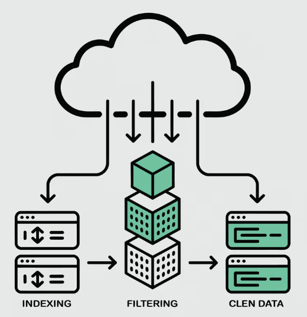
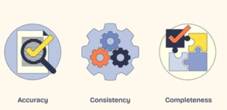
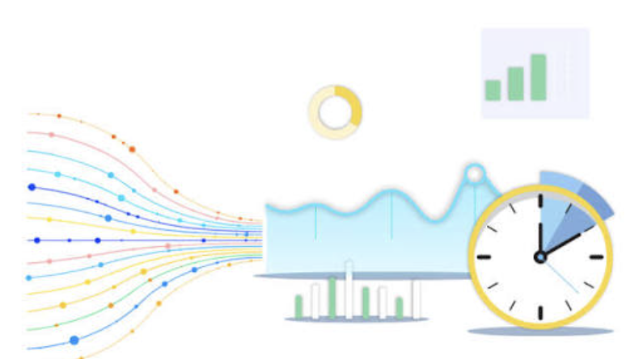

About Me
Welcome to my portfolio. I am excited to share my journey as I continue learning web development and building projects that solve real problems. I enjoy combining creativity, problem solving, and technology to create meaningful digital experiences. Through practice, I am developing skills in HTML, CSS, and related tools while also strengthening my understanding of design, accessibility, and user experience. My goal is to keep improving through hands-on projects, collaboration, and curiosity. This portfolio highlights the work I have done so far and reflects my motivation to grow into a confident and capable web developer over time in every project.
I have worked on several exciting projects that showcase my skills and passion for web development.
Project 1: Market Data Ingestion Pipeline

The MacroMarketData ingestion pipeline automatically retrieves external financial and macro‑economic data, validates and normalizes it, and stor d results in the MacroMarketData PostgreSQL database so all downstream analytics always operate on fresh, reliable inputs.
Project 2: Market Data Quality Monitor

The Market Data Quality Monitor validates every dataset entering MacroMarketData by checking schema, timestamps, and value integrity, ensuring only clean and reliable data flows into the analytics layer.
Project 3: Data Recency Monitor

The Data Recency Monitor tracks when each dataset was last refreshed, flags stale inputs before they reach downstream analytics, and helps ensure MacroMarketData decisions are always based on current information.